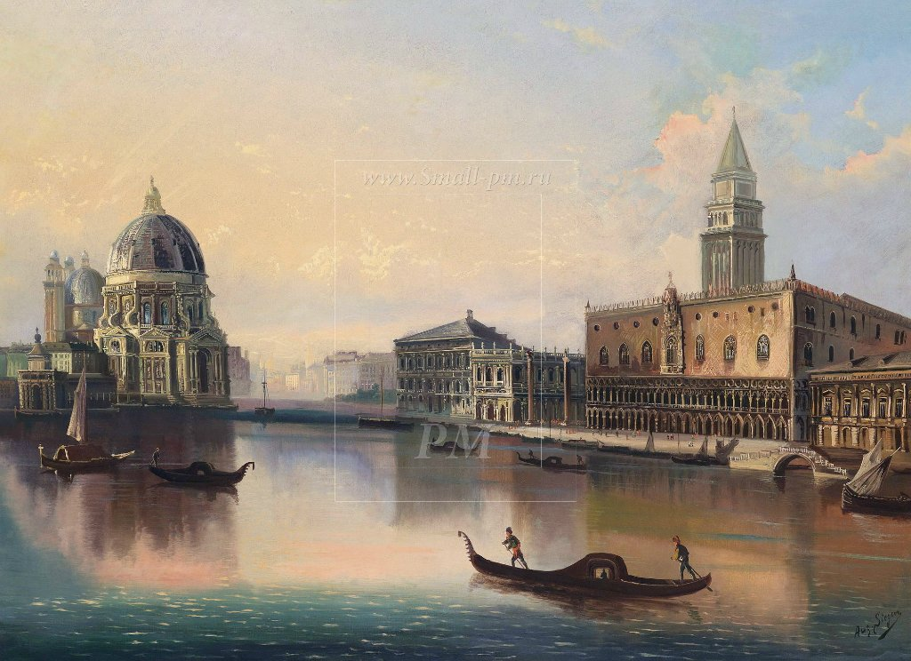
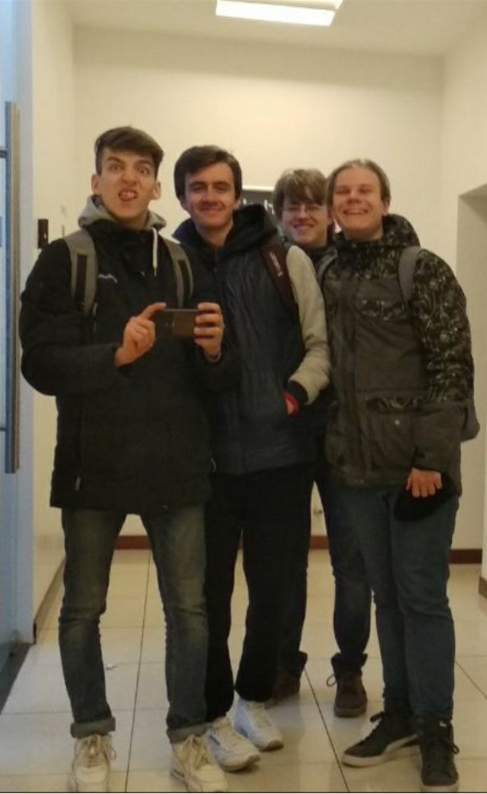

Предисловие
Домашним заданием было сделать страничку вольного формата, и я посчитал что обьеденить первые три лабораторные будет весьма практичнее и вместе, их будет проще проверить.
 Расскажу пожалуй об окружающем мире (немножечко).
Сейчас в мире карантин, одна половина людей придерживается советов руководителей страны, другая же половина, считает что карантин - лишь отмывание денег, и всемирный заговор.
в дюбом случае, для природы, карантин несёт хорошие плоды, о примерах этого, я и расскажу.
Всю информацию естественно я нашел в интернете, и возможно, не всё из неё на 100% правдиво. Таков наш мир... .
Расскажу пожалуй об окружающем мире (немножечко).
Сейчас в мире карантин, одна половина людей придерживается советов руководителей страны, другая же половина, считает что карантин - лишь отмывание денег, и всемирный заговор.
в дюбом случае, для природы, карантин несёт хорошие плоды, о примерах этого, я и расскажу.
Всю информацию естественно я нашел в интернете, и возможно, не всё из неё на 100% правдиво. Таков наш мир... .
Венеция
В Венеции впервые за долгие годы вода в каналах стала прозрачной, в них появилась рыба. Горожане даже создали в Facebook группу Venezia Pulita («Чистая Венеция»), где размещают фото рыбешек и вернувшихся на каналы лебедей. «Поскольку нет движения лодок, белые лебеди вернулись. Это бесценно!» – написал блогер Filterjm. Он же в начале недели разместил фото диких уток, которые «облюбовали в качестве нового дома» несколько фонтанов в историческом центре Рима. По мнению итальянских блогеров, «природа оживает».  Впрочем, как объяснили CNN в венецианской мэрии, появление рыб и возвращение лебедей вызваны не улучшением качества воды, а отсутствием лодок и кораблей – из-за эпидемии туристы оставили город в покое. Напомним, что с 22 февраля в 12 городах Италии был введен карантин с запретом на въезд и выезд. Италия обогнала Китай по размаху эпидемии. Неважно себя чувствует и ее экономика. Власти прогнозируют 30-процентное падение производства, безработица грозит 10 млн итальянцев. В итоге спутники зафиксировали резкое снижение уровня выброса диоксида азота и прочих вредных веществ.
Образование
Как студенты учатся в эпоху карантина?! 
Главной проблемой стало отсутствие единой платформы для проведения занятий. После перевода всех пар в онлайн, студенты жаловались на технические проблемы и увеличение количества работы: быстрые устные ответы превратились в многостраничные рефераты на ту же тему. К тому же студенты стали тратить больше времени на выстраивание коммуникации с преподавателем. Экзаменационные сессии, защита курсовых и дипломных работ в вузах до сих пор проводились только очно. Изменение формата обучения стало для университета вынужденным экспериментом, который подталкивает вузы к дальнейшей цифровизации.
Мне на дистанционном обучении скорее не нравится. Трудно из-за того, что у нас нет какой-то единой системы. То есть с одним преподом ты позанимался в Zoom, допустим, потом скинул домашку ему на почту; с другим — в Skype, и домашку ему надо скидывать через старосту. Одним преподавателям пишите в Microsoft Word, другим — от руки и фоткаете или сканируете, третьим — вообще через Google Hangouts и Google Classroom. Обилие всех этих сайтов утомляет. Было бы гораздо проще, если бы мы все занимались на одной платформе, а домашнее задание все преподаватели спрашивали бы в одном формате. Унифицировать бы все это. А по каким-то предметам вроде физкультуры дистанционное обучение выглядит вообще смешно и убого.
Шахматы